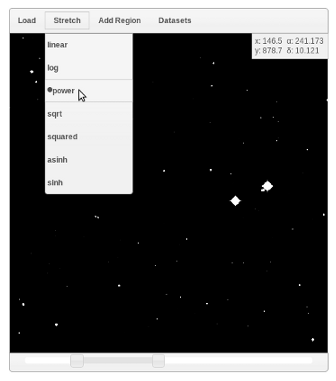

FITS Viewer
Loading an Image

When the FITS viewer is first initalized, you will be presented with three options for loading an image.
The choose file button allows you to load in a FITS file from your local disk. Note that files loaded from your local machine will not be saved to the dashboard state and must be loaded again if you navigate away from the dashboard.
There are also a set of example images stored on the server. Selecting an option from the sample dropdown menu will pull up one of these images.
Finally, FITS files can be loaded from a URL. The FITS viewer will remember images which are loaded from the sample set or from a URL.
After an image with a valid coordinate system (see wcsjs for a list of valid coordinate systems) is loaded, the gadget sends a viewport boundary notification to the dashboard. This allows gadgets like the Data Inquirer to construct a query based on the physical boundaries of the image. For more information about what types of images are supported by the FITS Viewer, see fitsjs.
Panning and Scaling
Images can be panned by selecting the 'pan' radio button and dragging across the image. Zooming is also possible with the mouse wheel.
The FITS viewer gadget also provides some basic scaling and stretching controls, which can be found directly below the image display window.
Annotations

After an image is loaded, the FITS viewer gadget allows the user to highlight regions and place annotations on an image. All of the controls for creating annotations are available by selecting the 'add' radio button.
There are three types of annotations available: circles, rectangles, and polygons. The easiest way to create an annotation is to select the type and drag out a region on the image. For more precision, you can also define a region with a specific location and size. Note that polygonal regions cannot be created with the mouse and must be defined by entering a set of points. The 'coordinate type' field at the bottom of the control panel tells the FITS viewer to read the numbers you enter as either pixel or sky coordinates.
It is also possible to load a set of annotations from a dataset by selecting the 'dataset' option. After you choose a dataset from the dropdown menu and click 'import', the gadget will search the specified dataset for a 'ra' and 'dec' field. If it finds one, a small circular annotation will be placed for each point in the dataset.
The 'select' option allows you to highlight annotations. If the annotations correspond to points loaded in from a dataset, highlighting the annotations will also highlight the corresponding points in the dataset.